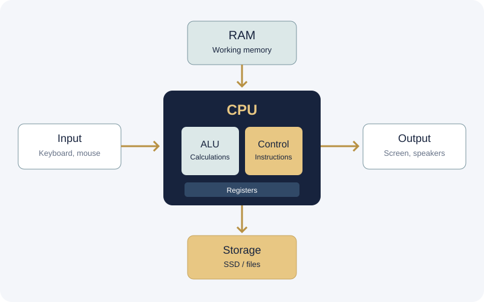

A computer accepts input, processes information, stores data, and produces output. Computer organization explains how its components work together.

Simplified computer system architecture
CPU
Executes program instructions.
ALU
Performs arithmetic and logical operations.
Control Unit
Coordinates instruction execution and data movement.
Registers
Small, fast storage locations inside the CPU.
RAM
Holds data and instructions currently in use; generally volatile.
Storage & I/O
Storage preserves files; input and output devices connect the computer to the outside world.
The instruction cycle
Fetch retrieves an instruction, decode identifies what it requires, and execute carries out the operation. Real processors use more detailed stages and techniques.
Key takeaway: Hardware components cooperate to execute software instructions.